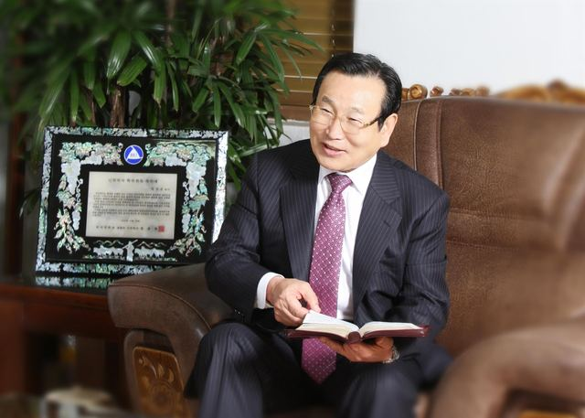

우리교회는 > 설립목사
설립목사

故 장성운 원로목사
故 장성운 원로목사님은 신승교회의 설립목사로서, 한 평생 복음과 교회를 위하여 헌신하셨습니다.
1975년 강동구 마천동의 최한영, 명정자 성도 가정에서 드린 작은 창립예배는 하나님 나라를 향한 큰 믿음의 출발이었으며, 신승교회는 그 믿음 위에 세워져 왔습니다.
목사님은 교회의 외적 성장보다 복음의 본질을 더욱 소중히 여기셨으며, 성전 건축과 교회 이전의 모든 과정 속에서도 오직 하나님의 인도하심을 신뢰하며 걸어오셨습니다.
2016년 3월 22일, 목사님은 하나님의 부르심을 받아 안식에 들어가셨습니다.
그러나 복음을 향한 열정과 교회를 향한 사랑은 오늘의 신승교회 안에 살아 있는 유산으로 남아 있습니다.
학력사항
- 대한예수교 장로회 연합 총회신학대학원 졸업
- 미국 로스앤젤레스대학 대학원 목회학 석사 수료
- 백석대학교 명예신학박사 수여
경력사항
- 대한예수교 장로회 공의회 목사 임직
- 대한예수교 장로회 신승교회 개척시무(당회장)
- 대한예수교 장로회(연합) 증경노회장(남,동,수도노회)
- 법무부 성동구치소 기독교 종교위원회 명예회장
- 수지방주교회 헌당
- 평택 대광교회 설립
- 기독교연합신문사 운영이사장
- 대한예수교장로회 신승교회 원로목사
- 백석총회 송파노회 공로목사
- 해외(우즈베키스탄, 중국, 네팔, 태국, 대만, 필리핀, 일본, 몽골)에 선교사와 신학교 종말론 강의, 의료선교, 교회 설립 지원
- 백석 총회 명예 총회장
- 백석대학교 법인 이사